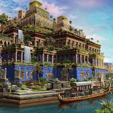
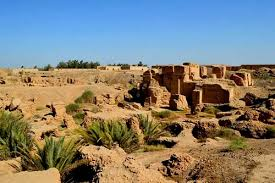
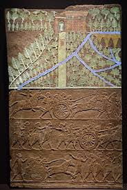
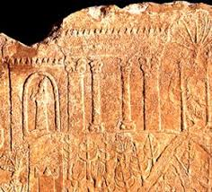

HANGING GARDENS

Introduction

According to ancient texts, The Hanging Gardens of Babylon, also known as the Hanging Gardens of Semiramis, near present-day Al Hillah, Babil in Iraq, are considered to be one of the original Seven Wonders of the Ancient World. They were built by the Chaldean king Nebuchadnezzar II to please his sick wife, Amytis of Media, who longed for the trees and fragrant plants of her homeland Persia. The gardens were destroyed by several earthquakes after the 2nd century BC.
Literary
The Greek historian Diodorus Siculus (1st century BCE) described the Hanging Gardens as a series of rising terraces, forming an artificial green mountain in the flat Mesopotamian plain. Reaching over 75 feet (23 meters) in height, these terraces were covered with exotic trees and flowers brought from distant lands, creating a living paradise inhabited by birds and small animals. The gardens were remarkable for their self-watering system, an ingenious hydraulic mechanism that lifted water from the river to the highest levels, distributing it through hidden channels to all tiers. More than a display of beauty, they symbolized royal power and the ability to command nature, reflecting the ancient image of the cosmic mountain linking earth and heaven. Whether in Babylon under Nebuchadnezzar or in Nineveh under Sennacherib, Diodorus’ account preserves the vision of a lost wonder where engineering and nature existed in perfect harmony.
Hanging gardens of Ninive. Relief of the palace of Assurbanipal in Ninive that describes the wonders of the gardens created by Sennacherib that could be the authentic hanging gardens attributed to Babylon, on which my interpretation of the Hanging Gardens of Ninive is based.
Research
Description of garden

This is how documents and manuscripts describe the Hanging Gardens of Babylon — a magical place adorned with glazed tiles, surrounded by trees and decorated with lion statues. This architectural wonder marked the golden age in the history of Mesopotamia, the period of great prosperity for the Chaldean kingdom. The unique name “Hanging Gardens” originates from the Greek word kremastós, meaning “suspended,” referring to an architectural style where plants are grown on balconies and elevated terraces. Many theories suggest that the garden featured vaulted, arched roofs built from brick and bitumen or stone, irrigated by a fountain system resembling waterfalls to maintain its lush greenery.
They consisted of vaulted terraces of baked brick supported on pillars and filled with exotic plants and trees such as willows , oaks , coconuts , bananas and palms . A reservoir at the top supplied water to this incredible garden from the Euphrates River , which ran at the foot of the hill
German archaeologist Robert Koldewey (1855–1925) is best known for his excavations of Babylon, where he searched for evidence of the legendary Hanging Gardens. Between 1899 and 1917, he uncovered large palace foundations in the southwestern part of the city, including a series of stone-vaulted chambers unlike typical Babylonian construction. Koldewey interpreted these vaults as the substructure of the Hanging Gardens, designed to support the weight of heavy soil and large plants. He also identified nearby shafts and channels, which he believed formed part of an ancient water-lifting system, allowing water to reach the elevated terraces. His findings strongly influenced the long-standing belief that the Hanging Gardens were located in Babylon under King Nebuchadnezzar II, though later research has questioned this identification. Nonetheless, Koldewey’s meticulous excavation reports remain a crucial source for understanding Babylonian architecture and the possible reality behind this legendary wonder.
